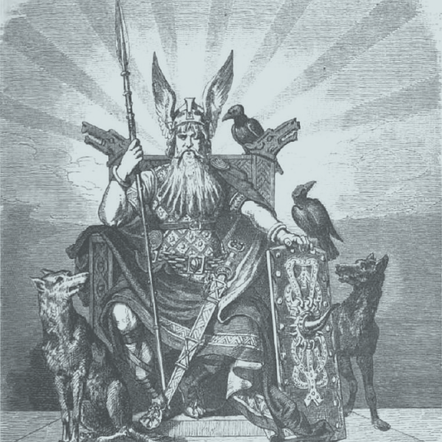
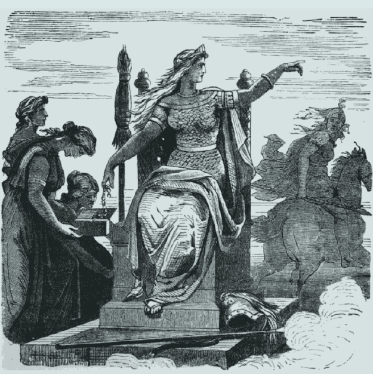
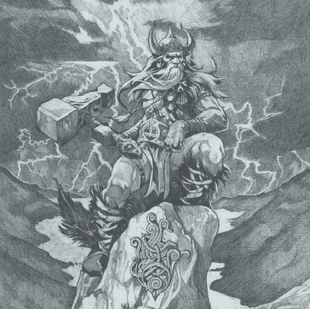
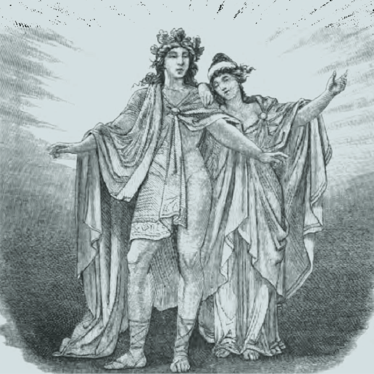
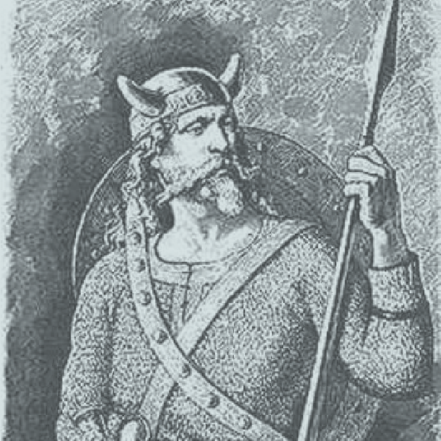
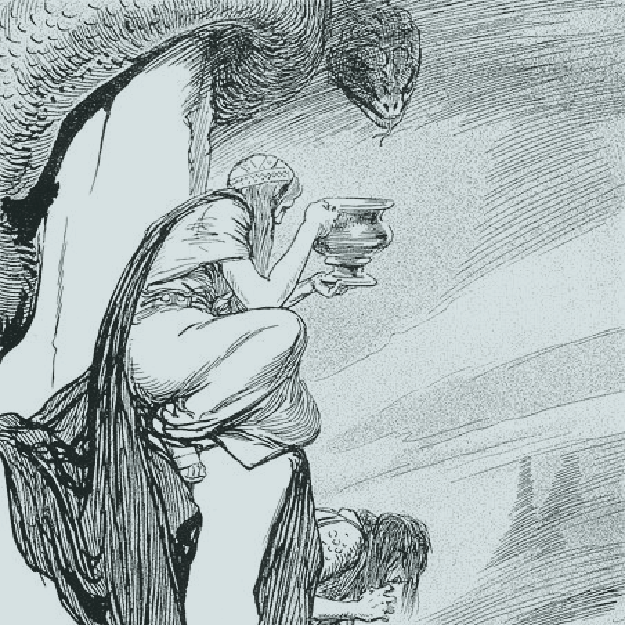
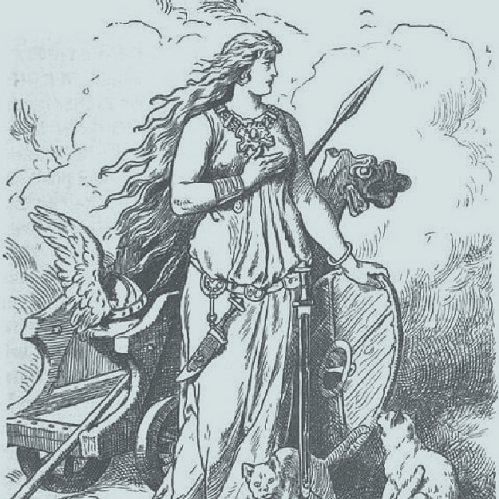

ODIN
The supreme deity of Norse mythology and the greatest among the Norse gods was Odin, the Allfather of the Aesir. He was the awe-inspiring ruler of Asgard, and most revered immortal, who was on an unrelenting quest for knowledge with his two ravens, two wolves and the Valkyries. He is the god of war and, being delightfully paradoxical, the god of poetry and magic. He is famous for sacrificing one of his eyes in order to be able to see the cosmos more clearly and his thirst for wisdom saw him hang from the World Tree. Odin’s wife, Frigg, was a paragon of beauty, love, fertility and fate. She was the mighty queen of Asgard, a venerable Norse goddess, who was gifted with the power of divination, and yet, was surrounded by an air of secrecy. Frigg was a very protective mother, so she took an oath from the elements, beasts, weapons and poisons, that they would not injure her brilliant and loving son, Balder.
FRIGG
THOR
Thor is the god of thunder, the sky, and agriculture. He is the son of Odin and Jord, and father of his sons Modi, Magni, and daughter Thrud. Thor was the defender of Asgard, realm of the gods, and Midgard, the human realm, and is primarily associated with protection through great feats of arms in slaying giants. The majority of the tales featuring Thor, in fact, put him in conflict with a giant or with his nemesis the Midgard Serpent (Jörmungandr, the “huge monster”), a monstrous snake who coils and twists itself around the world. Like almost all of the Norse gods, Thor is doomed to die at Ragnarök, the end of the world and twilight of the gods, but falls only after killing the great serpent with his powerful hammer Mjollnir, dying to its poison; his sons Magni and Modi survive Ragnarök along with a small number of other gods and inherit his hammer which they use to restore order.
BALDER
Frigg and Odin are the parents of Balder, who was described as living between heaven and earth. Balder was the epitome of radiance, beauty, kindness and fairness. He was believed to be immortal, but he was killed with mistletoe – the golden bough that contained both his life and his death. Tyr is one of the oldest gods of the Germanic peoples and a somewhat enigmatic figure. He was apparently the god concerned with the formalities of war—especially treaties—and also, appropriately, of justice. It is in his character as guarantor of contracts, guardian of oaths, that the most famous myth about him may be understood: as a guarantee of good faith, he placed his hand between the jaws of the monstrous wolf Fenrir while the gods, pretending sport but intending a trap, bound the wolf; when Fenrir realized he had been tricked he bit off Tyr’s hand
TYR
LOKI
Loki, in Norse mythology, a cunning trickster who had the ability to change his shape and sex. Although his father was the giant Fárbauti, he was included among the Aesir (a tribe of gods). Loki was represented as the companion of the great gods Odin and Thor, helping them with his clever plans but sometimes causing embarrassment and difficulty for them and himself. He also appeared as the enemy of the gods, entering their banquet uninvited and demanding their drink. He was the principal cause of the death of the god Balder. Loki was bound to a rock (by the entrails of one or more of his sons, according to some sources) as punishment, thus in many ways resembling the Greek figures Prometheus and Tantalus. Also like Prometheus, Loki is considered a god of fire.
FREYA
Freya was one of the most sensual and passionate goddesses in Norse mythology. She was associated with much of the same qualities as Frigg: love, fertility and beauty. She was the sister of Freyr. Given her expertise in controlling and manipulating the desires, health, and prosperity of others, she’s a being whose knowledge and power are almost without equal. Freyr was one of the most widely and passionately venerated divinities amongst the heathen Norse and other Germanic peoples. One Old Norse poem calls him “the foremost of the gods” and “hated by none.” The reasons for this aren’t hard to understand; their well-being and prosperity depended on his benevolence, which particularly manifested itself in sexual and ecological fertility, bountiful harvests, wealth, and peace.